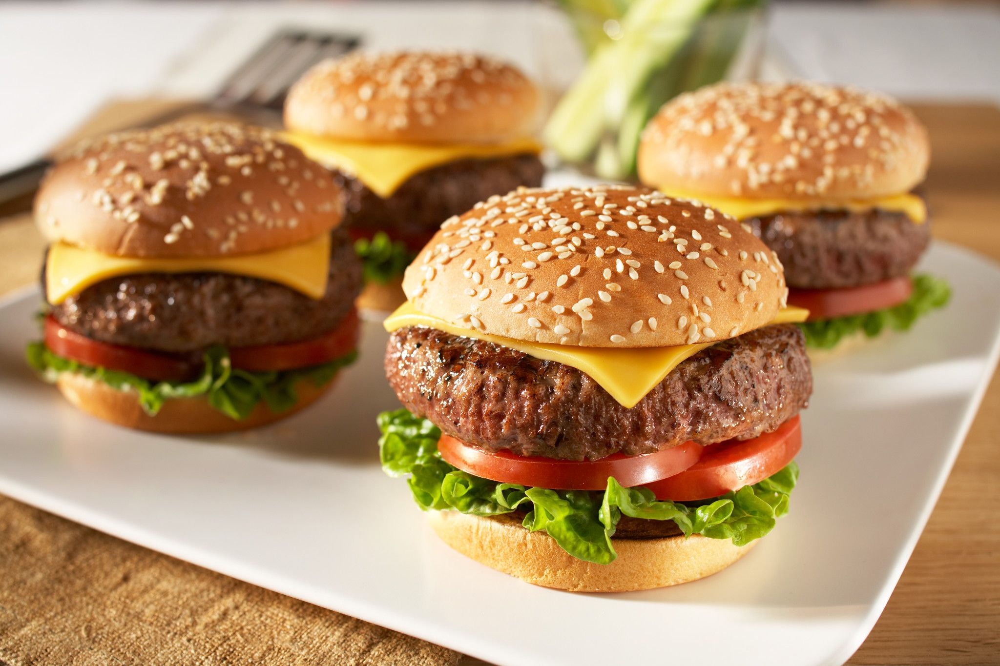

Cheeseburgers

Description
Adding cheese to hamburgers became popular in 1920. There are several competing claims as to who created the first cheeseburger. Lionel Sternberger is reputed to have introduced the cheeseburger in 1924 at the age of 16. He was working as a fry cook at his father's Pasadena, California sandwich shop, "The Rite Spot", and "experimentally dropped a slab of American cheese on a sizzling hamburger."
Ingredients
- 1 pound Ground Beef 93% lean or leaner
- 1 teaspon steak seasoning blend
- 4 hamburger buns
- 4 lettuce leaves
- 4 tomato slices
- Ketchup, mustard, onion slices, pickle slices (optional)
- Combine Ground Beef and steak seasoning in large bowl, mixing lightly but thoroughly. Lightly shape into four 1/2-inch thick patties.
- Place patties on grid over medium, ash-covered coals. Grill, covered, 8 to 10 minutes (over medium heat on preheated gas grill, 7 to 9 minutes) until instant-read thermometer inserted horizontally into center registers 160°F, turning occasionally. About 2 minutes before burgers are done, place buns, cut sides down, on grid. Grill until lightly toasted. During last minute of grilling, top each burger with cheese slice.
- Line bottom of each bun with lettuce; top with tomato, burger and toppings, as desired. Close sandwiches.